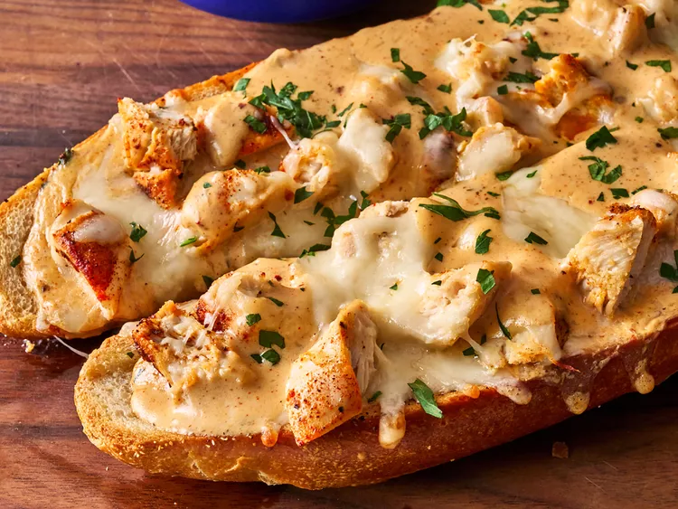

Chicken Alfredo Garlic Bred Recipe
Home

Let's learn how to make Chicken Alfredo Garlic Bread!
This chicken Alfredo garlic bread is delicious with a seasoned Alfredo sauce, chopped chicken, and 3 kinds of cheese, baked on a toasted French loaf.
Ingredients
- 8 tablespoons butter, divided
- 1 tablespoon plus 1/2 teaspoon garlic powder, divided
- 1 tablespoon chopped fresh parsley
- 1 loaf French bread, cut in half horizontally
- 1 (15 ounce) jar Alfredo sauce, such as Rao's®
- 1/2 cup grated or shredded Parmesan cheese, divided
- 1/2 teaspoon garlic powder
- 1/2 teaspoon onion powder
- 1/2 teaspoon smoked paprika
- 1/4 teaspoon salt
- 1/4 teaspoon freshly ground black pepper
- 4 cooked skinless, boneless chicken breasts, roughly chopped
- 6 ounces Gruyere cheese, shredded
- 8 ounces Monterey Jack cheese, shredded
Steps
- Preheat the oven to 400 degrees F (200 degrees C).
- In a small bowl whisk together 5 tablespoons melted butter, 1 tablespoon garlic powder, and 1 tablespoon parsley. Place French bread, cut sides up, on a baking sheet. Brush butter mixture evenly onto cut sides of bread.
- Bake in the preheated oven until edges are golden brown, 4 to 5 minutes. Remove and set aside. Do not turn the oven off.
- Meanwhile, heat Alfredo sauce in a saucepan over medium heat, stirring often. Add remaining 3 tablespoons butter, 1/4 cup Parmesan, remaining 1/2 teaspoon garlic powder, onion powder, smoked paprika, salt, and pepper. Stir until butter is melted and ingredients are well combined. Remove from heat.
- Spread half of Alfredo mixture evenly over toasted bread. Add chopped chicken over Alfredo, and top evenly with remaining 1/4 cup Parmesan cheese, Gruyere, and Monterey Jack cheese.
- Bake in the preheated oven until cheese is bubbly and golden brown, 8 to 10 minutes.
- To serve, cut into 2-inch slices. Garnish with fresh parsley and serve with remaining Alfredo sauce.